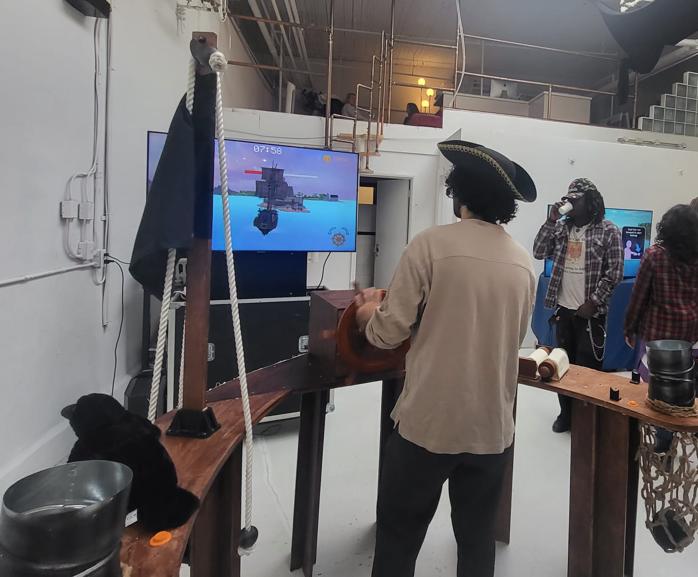
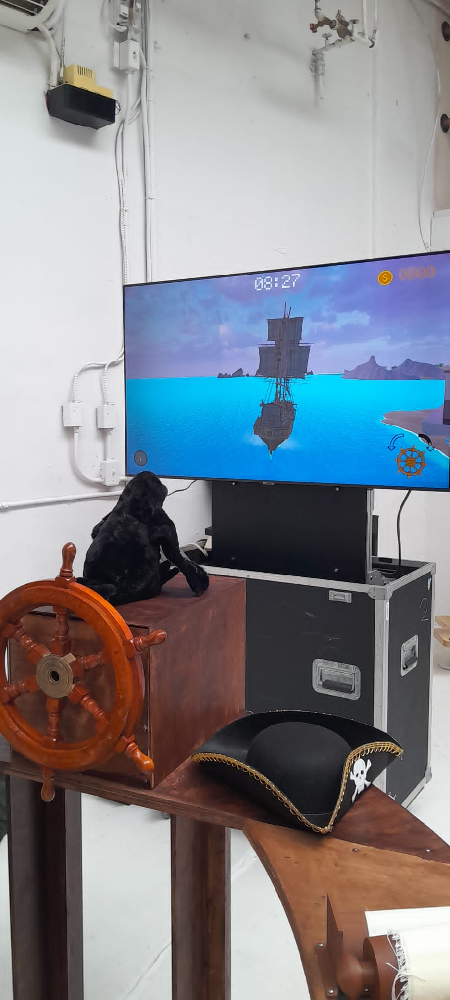
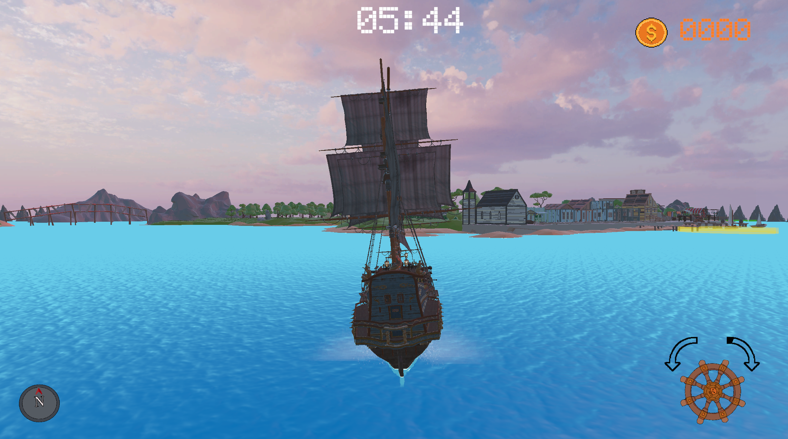

PROJECT / 02
Port to
Profit
Project type
Video game / physical installation.
Date
September 2025 – April 2026
Port to Profit blends physical interaction with digital gameplay systems, narrowing the distance between player, interface, and game. The work invites both solitary and collaborative play, allowing participants to engage with the controls in whichever manner feels most intuitive.
This work reflects an interest in alternative approaches to player interaction. As home console controllers have evolved, their designs have steadily converged toward a shared standard, narrowing the range of possible interactions across platforms. Port to Profit emerges as a response to this homogenization, probing the creative and cultural consequences of design uniformity in contemporary game design.


